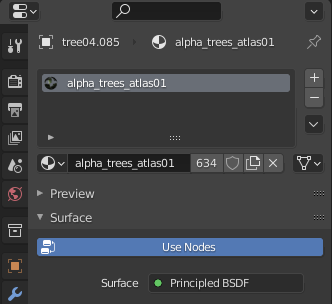
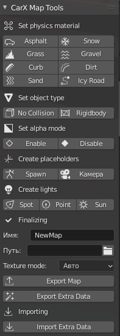

Map Conversion
//TODO: To be edited
This is a basic guide for map conversion.
It is intended for people who already have experience working with 3D software such as 3Ds Max and Blender.
The guide will use Blender as an example software since it is free and is most popular for converting maps in CarX.
Physical Materials
Physical materials are assigned by adding a "tag" in the object's name like in example bellow:

Available materials and their tags:
Asphalt - road_
Grass - grass_
Kerbs - kerb_
Sand - sand_
Snow - snow_
Gravel - gravel_
Dirt - dirt_
Ice - icyroad_
Object types
There are 2 tags for the object types:
Object with no collision - nocol
Riggid body - rb
Extras
You can add spawnpoints, and light sources to your maps. To do so you will have to create an "Arrow" object and name it accordingly.

To create a spawnpoint simply name it Spawnpoint
For light sources:
Spotlight - Spot
Pointlight - Point
Sun - Sun
Object names have to be in english.
Alpha (transparency)
For objects that have a transparent texture you will have to add one of the following tags:
Transparent without collision - alpha_
Transparent with collision - alphaCol_
Transparent with normalmap - alphaLit_

Material properties
In the material settings you can change specularity and roughness parameters.
Specularity is responsible for the sort of "glare" effect.
Roughness makes the surface more rough or smooth (smoother surface will be more reflective).

Afterword
CarX Map Tools plugin for Blender made by Zi9 is also supported.

Select the object that you want to apply the needed material and press the button. You can only assign one material to a single object.
Spawnpoints and light sources are saved to Extra Data file.